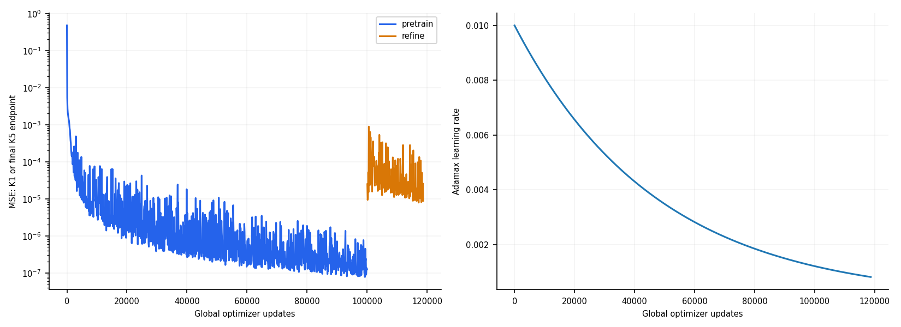

저자 학위논문 3장을 기준으로 수정 MLP, 당량비 ParamNet, Adamax와 지수 학습률 감소, 단일 예측 사전학습 및 최종 5-step 오차 후속 학습을 구현했다. soft constraint와 학습 중 물리 보정은 없다.
공개 Burke 배포판의 H2/air 동등 축소 기구를 사용했다. 10종·25개 Cantera rate entry이며, 저자가 기술한 20반응 파일 자체를 확보한 것은 아니다. 기존 GRI 기반 참조, 실패한 모델과 결과는 보존했다. 정확한 비공개 코드와 가중치의 복제라고 주장하지 않는다. 융합식과 log(0) 수치 처리 등 남은 가정은 config.json에 있다.
학습 99개와 독립 검증 12개 초기 조건으로만 선택했다. 저자 격자의 미지 조건 111개와 별도로 동결한 새 보간 조건 16개는 선택 이후 평가했다. train 행의 예제는 학습 중 본 조건이다. 모든 추론은 20 μs씩 50번 자기 예측을 되먹이며 1 ms까지 진행한다. 창 내부의 0.1 μs 질의는 추가 진행 스텝이 아니다.
곡선 정확도와 물리적으로 유효한 상태를 구분한다. representative_unconstrained는 정규화된 출력을 그대로 되먹이는 논문식 곡선 진단이며 음수 농도가 있어도 수치 계산을 계속한다. clipping·보정·정답 주입은 없다. 음수 농도 진단을 보정 없는 유효한 성공으로 부르지 않는다. representative_raw와 raw_full은 잘못된 상태에서 중단한다. repaired_full은 clipping＋원소 투영＋상압 엔탈피 온도 보정이 있는 별도 시스템이다.
검증으로 선택한 모델과 학습 규칙을 끝까지 수행한 최종 가중치를 둘 다 보존·평가한다. protocol_final 두 행과 대표 변수 PDF의 주황 선은 마지막 학습 가중치다. 다른 네 행 및 전체 변수 PDF는 검증 선택 모델이다. 후속 학습이 나빠졌을 때 이전 체크포인트로 고른 결과만 보여주어 이를 숨기지 않는다. 시간상한으로 업데이트 목표를 채우지 못하면 최종 가중치도 불완료 프로토콜로 표시한다.
NRMSE=RMSE(Cantera,NN)/RMS(Cantera), 백분율이 아닌 비율이다. 대표 변수는 T/H2/H/O2/H2O의 joint5, 전체 상태는 T＋8반응종의 joint9를 판정하며 각각 모두 0.1 이하가 정확도 통과다. N2와 AR은 별도다. 불완주에는 전체 기간 점수가 없다. 표의 마지막 열은 곡선 정확도와 상태 유효성을 둘 다 만족한 수다.
| 평가 집합 | 방식 | 수치 완주 | 곡선 정확도 | 상태 유효성＋정확도 |
|---|---|---|---|---|
| fresh_test | representative_unconstrained | 16/16 | 16/16 | 12/16 |
| fresh_test | representative_raw | 12/16 | 12/16 | 12/16 |
| fresh_test | raw_full | 12/16 | 12/16 | 12/16 |
| fresh_test | repaired_full | 16/16 | 16/16 | 16/16 |
| fresh_test | representative_protocol_final_unconstrained | 16/16 | 4/16 | 0/16 |
| fresh_test | representative_protocol_final_raw | 4/16 | 0/16 | 0/16 |
| paper_test | representative_unconstrained | 111/111 | 61/111 | 22/111 |
| paper_test | representative_raw | 62/111 | 22/111 | 22/111 |
| paper_test | raw_full | 51/111 | 16/111 | 16/111 |
| paper_test | repaired_full | 111/111 | 77/111 | 77/111 |
| paper_test | representative_protocol_final_unconstrained | 111/111 | 1/111 | 0/111 |
| paper_test | representative_protocol_final_raw | 30/111 | 0/111 | 0/111 |
| train | representative_unconstrained | 1/1 | 1/1 | 1/1 |
| train | representative_raw | 1/1 | 1/1 | 1/1 |
| train | raw_full | 1/1 | 1/1 | 1/1 |
| train | repaired_full | 1/1 | 1/1 | 1/1 |
| train | representative_protocol_final_unconstrained | 1/1 | 0/1 | 0/1 |
| train | representative_protocol_final_raw | 0/1 | 0/1 | 0/1 |
| val | representative_unconstrained | 12/12 | 12/12 | 9/12 |
| val | representative_raw | 9/12 | 9/12 | 9/12 |
| val | raw_full | 9/12 | 9/12 | 9/12 |
| val | repaired_full | 12/12 | 11/12 | 11/12 |
| val | representative_protocol_final_unconstrained | 12/12 | 0/12 | 0/12 |
| val | representative_protocol_final_raw | 3/12 | 0/12 | 0/12 |
총 학습 118712 / 120000 update, 선택 pretrain의 global update 72500. 종료: overall_time_cap. 시간상한을 평탄이라고 부르지 않는다.
모든 변수 그래프 · 초기 0.1 ms 확대 · 논문식 정규화 대표 변수 곡선 · 변수별 NRMSE · 조건별 유효성·정확도·음수 발생 · 집계 표

주된 비교는 전체 미지 조건의 결과다. 온도 또는 좋은 한 조건만으로 재현 성공을 주장하지 않는다.